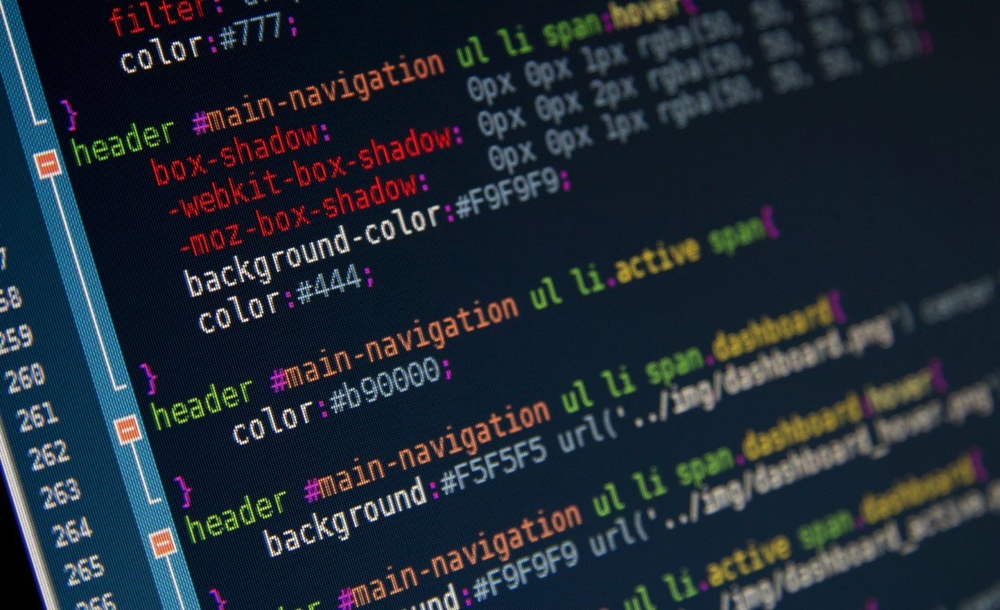

HTML
La estructura y el contenido de la página.
Antes de escribir código, hay una pregunta importante: ¿en qué vamos a programar? En este recorrido comenzaremos con el desarrollo web y aprenderemos paso a paso, sin intentar saberlo todo de golpe.

Vamos a crear páginas web con Visual Studio Code (VS Code), un editor donde escribimos y organizamos nuestros archivos. VS Code no es un lenguaje de programación: es una herramienta que puede sugerir y completar código mientras trabajamos. Lo importante es entender lo que escribimos, no copiar sugerencias sin saber qué hacen.
La estructura y el contenido de la página.
La apariencia, los colores y la distribución.
El comportamiento y la interactividad.
Un computador, un navegador, VS Code y ganas de probar y equivocarnos.
Programar también es probar, encontrar errores y volver a intentarlo. Un error no significa que seas malo: es una pista de lo que todavía podemos aprender.